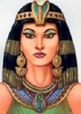

Cléopatre – Nữ hoàng Ai Cập, người phụ nữ nổi tiếng thế giới. Là người có ảnh hưởng số một đến lịch sử dân tộc Nilotic, không chỉ vì bà là một phụ nữ đẹp mê hồn của Ai Cập hơn 2000 năm trước, và là một Nữ hoàng cuối cùng của Vương triều diệt vong; mà còn vì chuyện tình tay ba giữa bà cùng Caesar(°) và Antony(1) làm động lòng người, đã ảnh hưởng đến lịch sử Ai Cập và thế giới lúc bấy giờ.

Để bảo vệ lợi ích của vương quốc Ai Cập, ngăn cấm người La Mã đoạt lấy Địa Trung Hải, Nữ hoàng Cléopatre đã đưa ra luật quyền về biể, làm được điều đó không phải bằng tài năng mà bằng vẻ đẹp tuyệt vời của bà, vẻ đẹp đã khiến Caesar – anh hùng La Mã và Antony quỳ mọp dưới chân bà. Vẻ đẹp của bà, hành vi của bà, đã ảnh hưởng đến lịch sử, dẫn đến sự phê bình, tranh luận của các nhà sử học lúc bấy giờ. Đồng thời ảnh hưởng đến các nhà văn, nghệ thuật và triết học sau đó, thậm chí cả những nhà cách mạng; trở thành đề tài sáng tác văn học nghệ thuật và điện ảnh thế giới ngày nay. Quả thật là một nữ hoàng có một không hai trong lịch sử thế giới.
Trong “Ghi chép tư tưởng” của Pascal(2) đã từng nói: “Nếu cái mũi của Cléopatre dài thêm được một chút, thì cục diện thế giới sẽ thay đổi”. Câu nói “sẽ thay đổi cục diện thế giới” của Pascal, chính là sự thay đổi tiến trình lịch sử lúc bấy giờ. Ý nghĩa của câu nói này là: Cléopatre với vẻ đẹp có một không hai đã hấp dẫn được Caesar và Antony tiếng tăm lừng lẫy của La Mã, từ đó mà ảnh hưởng đến lịch sử Ai Cập và La Mã; nếu như cái mũi của bà dài thêm chút nữa thì lịch sử sẽ không giống như hiện nay.
Shakespeare(3) tác gia nổi tiếng đã từng viết về “Antony và Cléopatre”, Bernard Shaw(4) thì viết về “Caesar và Cléopatre”, Heine (5) cũng đã từng dùng ngôn ngữ văn học của mình miêu tả vị Nữ hoàng Ai Cập này. Dường như trong “truyện anh hùng” nổi tiếng của Ploutarchos(6) – tác gia truyện ký La Mã cổ, người cùng thời đại với Cléopatre, cũng đã từng miêu tả tỉ mỉ vị Nữ hoàng này. Ngoài ra còn rất nhiều nhà sử học Ai Cập, nước Pháp và trên thế giới nghiên cứu, phê bình Nữ hoàng Cléopatre rộng rãi và sâu sắc hơn, thậm chí ngay cả Plekhanov(7) cũng đã từng nói đến Cléopatre trong tác phẩm của mình. Sau đó nghệ thuật hình tượng âm thanh hiện đại cũng đưa ra phim “Vị vua đẹp Ai Cập”, lúc này hình tượng Cléopatre trong phạm vi thế giới càng được mọi người biết đến nhiều hơn nữa.
Trong số đông những người miêu ta và đánh giá Nữ hoàng Cléopatre, có khen có chê, có công bằng có thiên lệch. Có người bôi nhọ bà là kỹ nữ, ma nữ, là “người nữ trí mạng” làm biến chất chiến sĩ La Mã; có người khen bà là Nữ hoàng đẹp, học thức uyên bác, là hóa thân của tinh thần Ai Cập. Ở đây, chúng tôi không bàn luận việc đánh giá này là công bằng hay không, mà chỉ giới thiệu đến độc giả cuộc đời huyền thoại của Nữ hoàng Cléopatre và câu chuyện lịch sử lừng danh của bà.
Chị em thông hôn giữ quyền binh
Sông Nile bắt nguồn từ Ethiopia(8) cao nguyên Đông Phi, hòa nhập với dòng sông Nile xanh, dòng sông Nile trắng của Uganda(9),sau đó đổ vào Soudan(10); nó như một con trăn lớn của Châu Phi, qua sa mạc Bắc Phi, chảy ra Địa Trung Hải. Cửa sông Nile đổ vào biển hình thành tam giác, diện tích đến vài km2, như cái miệng của con trăn lớn há ra.
Con trăn lớn này, đẹp làm rung động lòng người, nhưng có lúc lại khiến người ta khiếp sợ. Nó có lợi cho việc tưới nước trồng trọt, cày cấy, giúp cho lương thực của nhân dân Ai Cập dồi dào, nhưng hàng năm gây lũ lụt, khiến cho nhân dân ở hai bên bờ tổn thất lớn về người và của. Nhưng dù thế nào, “Ai Cập là lễ vật của sông Nile”, bởi lẽ sông Nile là sông mẹ của Ai Cập.
Sông Nile phân Ai Cập ra làm 2 khu vực lớn trên địa lý: phía Nam từ biên giới Soudan đến lạch sông hẹp dài Cairo, dài đến hơn 750km, rộng khoảng 20 – 50km, trong lịch sử gọi là Ai Cập thượng, phía Bắc từ Cairo đến khu vực bãi bồi tam giác Địa Trung Hải, trong lịch sử gọi là Ai Cập hạ. Vào khoảng năm 4000 trước công nguyên, thì Ai Cập thượng và hạ đã hình thành vương quốc riêng của mình. Giữa Ai Cập thượng, hạ thường xuyên phát sinh chiến tranh, đến khoảng năm 3000 trước công nguyên, Menes của vương quốc Ai Cập thượng tiêu diệt vương quốc Ai Cập hạ, bước đầu thực hiện việc thống nhất Ai Cập.
Menes xây dựng Vương triều thống nhất, gọi là Vương triều đệ nhất Ai Cập. Từ đó đến năm 332 trước công nguyên, Ai Câp cổ trải qua thời kỳ những vương quốc như: cổ vương quốc, trung vương quốc, tân vương quốc cùng với thời kỳ ngoại tộc xâm nhập thống trị. Tổng cộng trải qua 30 Vương triều. Trong tiền trình lịch sử dài hơn 2600 năm, nhân dân Ai Cập đã tạo ra nền văn minh cổ đại rực rỡ, như kim tự tháp lớn và tượng mặt người mình sư tử nổi tiếng ở vùng phụ cận Cairo; cùng với miếu thần Thebes, mộ Tutankhamun, cung điện Amalna v.v…, được ca ngợi là kỳ quan thế giới cổ đại, phủ lên một lớp mạng che mặt thần bí cho vương quốc cổ văn minh này.
Khoảng giữa thế kỷ 4 trước công nguyên, vương quốc Macedoine(11) (còn gọi Makedonia) dần dần phát triển lớn mạnh lên, qua sự cải cách của Philip II(12), trở thành một cường quốc quân sự. Alexander(13) – con trai của Philip II, tiếp tục chính sách mở rộng xâm lược của cha. Vào năm 332 trước công nguyên, đánh bại quân đội đế vương Ba Tư, xâm chiếm Tiểu Á(14), Syria(15), Ai Cập. Alexander sau khi tiến vào Ai Cập đã lôi kéo người quản lý lễ Ai Cập, hóa trang làm con trai của Amen, và trở thành Quốc vương của Ai Cập mới.
Thời kỳ Alexander thống trị Ai Cập, ở cửa tả ngạn sông Nile chảy ra biển, đã xây dựng một thành phố lớn, lấy tên là Alessandria. Bên trong thành phố có kiến trúc lộng lẫy, đường lộ, vườn hoa, quảng trường, sân thể dục và bể phun nước rộng lớn. Strab – nhà địa lý học cổ đã miêu tả: “Toàn bộ Alessandria hình thành một mạng lưới đường phố, cưỡi ngựa và chạy xe đều rất dễ dàng. Đường phố rộng nhất có 2 đường, mỗi đường rộng 100 thước, đan xen tạo thành góc rõ ràng. Trong thành có đàn miếu và cung vua lộng lẫy, cung điện này chiếm gần 1/3 diện tích toàn thành. Một phần cung vua chính là vườn bác học Alessandria, bên trong có sân u lãm, có nhà hội họp”. Xây dựng cảng Alessandria có ngọn hải đăng nổi tiếng, là 1 trong 7 kỳ quan lớn được hâm mộ của người xưa. Alessandria trở thành trung tâm giao lưu văn hóa và giao dịch giau74 các nước phương Tây và Địa Trung Hải, và là một đô thị lớn nhất của toàn thế giới cổ đại lúc bấy giờ.
Sau khi Alexander chết, đế quốc chia rẽ. Ptolémée – tướng của Alexandria, xưng vua chính thức ở quốc gia giàu có nhất Ai Cập vào năm 305 trước công nguyên, xây dựng Vương triều trong lịch sử Ai Cập, đóng đô ở Alexander. Vương triều Ptolémée kế thừa truyền thống vương quốc của Ai Cập, thực hành chuyên chế quân chủ thần quyền, bảo lưu toàn bộ các cơ quan quốc gia Ai Cập cổ, tiến hành bóc lột và cướp đoạt tàn khốc đối với nhân dân Ai Cập, làm dấy lên sự phản kháng đấu tranh của nhân dân. Họ đứng lên khởi nghĩa nhiều lần, sức lực thống trị trung ương. Vương triều Ptolémée không được ổn định, nội bộ cung đình âm mưu lật đổ nhau càng trở nên sâu sắc. Người tranh đoạt Vương vị hoặc lợi dụng cơ hội nhân dân khởi nghĩa, hoặc dựa vào lực lượng của người La Mã, leo lên vũ đài Vương vị.
Cléopatre chính là con gái của Ptolémée 12, sinh vào năm 69 trước công nguyên. Bà là người lớn nhất trong âm mưu và đấu tranh bạo lực của cung đình, từ đó mà tăng thêm tài trí và dũng khí của bà, khiến bà trở thành người phụ nữ đa mưu túc trí, tài hoa hơn người, dồi dào tình cảm, có sắc đẹp trời cho. Ptolémée 12 – phụ vương của bà đã lưu vong và chết ở La Mã. Trước đó, để leo lên Vương vị, đã cùng với Caesar – tướng quân La Mã đạt được một hội nghị bí mật: nếu như La Mã có thể giúp ông khôi phục lại Vương vị, ông sẽ cung cấp cho La Mã 1750 vạn mác Đức. Vì thế, người La Mã thừa cơ xâm nhập, khiến Vương triều Ptolémée ngày càng dựa vào La Mã.
Năm đó Cléopatre 18 tuổi, Ptolémée 12 – phụ vương của bà qua đời. Theo truyền thuyết, người có quyền kế thừa Ai Cập cổ đại không phải là hoàng tử, mà là trưởng nữ con vợ cả của quốc vương. Điều đó có nghĩa là dù cho con chính của quốc vương, cũng phải cưới công chúa có quyền kế thừa Vương vị làm vợ mới có thể leo lên ngôi vị. Như thế, quốc Vương Ai Cập cổ đại vì để bảo đảm thuần túy huyết thống, dần dần hình thành truyền thống năm chung quốc chính, quốc vương kết hôn với con cái đồng bào. Do đó, Ptolémée 12 – phụ vương của Cléopatre lập ra di chúc, để cho Cléopatre 18 tuổi cùng với Ptolémée 13 – em trai lớn mới 12 tuổi kết hôn với bà, cùng nắm quyền bính. Năm 51 trước công nguyên, Cléopatre và Ptolémée 13 – chị em vợ chồng này cùng kế thừa Vương vị, cùng thống trị Ai Cập thượng hạ.
Do Cléopatre là một phụ nữ lên Vương vị, và Ptolémée 13, tuổi còn nhỏ. Nên lúc bấy giờ người năm thực quyền quốc vương chủ yếu là 3 người: Trưởng thái giám Portenos, tướng quân Archilas, và học giả Teodtus. Ba người này căn bản coi thường quốc vương và hoàng hậu tuổi nhỏ, rất nhiều giải pháp trọng đại không báo cáo xin chỉ thị của quốc vương và hoàng hậu, mà tự tác chủ trương. Các trọng thần quốc vương khác cũng đều ngạo nghễ ngang tàng hống hách, độc đoán chuyên quyền. Trên thực tế, Ptolémée 13 và Cléopatre trở thành quốc vương và hoàng hậu chỉ trên danh nghĩa.
Hai chị em vợ chồng Cléopatre hoàn toàn không có thực quyền, thực quyền thao túng nằm trong tay trọng thần thái giám, nên rất bất mãn. Vì thế, Cléopatre cùng thương lượng với em trai, tính toán đuổi ba vị quyền thần này, đoạt lấy đại quyền từ trong tay họ. Nhưng, Cléopatre lại quyên rằng, trong Vương triều, quyền lực cũng có tính sắp xếp của nó. Ptolémée 13 tuy nhỏ tuổi, nhưng ông cũng không muốn bị sự khống chế và thao túng của chị. Ông không những không đồng tâm hiệp lực với chị, ngược lại còn cùng với ba vị quyền thần liên kết nhau, để phản đối và bài xích Cléopatre.
Ở thời kỳ phụ vương của Cléopatre cầm quyền, trong cung vương Ai Cập, nạn ám sát thịnh hành. Chị của Cléopatre bỗng nhiên chết, theo truyền thuyết chính là bị đầu độc. Còn có một người chị khác của Cléopatre, vì tranh chấp với phụ vương một vấn đề, cũng bị ám sát. Ngày nay, em trai của Cléopatre cũng chính là chồng của bà, cấu kết với ba quyền thần, cùng đối phó với bà, sinh mạng của bà cũng sẽ nguy hiểm. Vì thế, bà chỉ còn cách nhẫn nhục đợi thời, bị bức bách ra đi, rời bỏ thủ đô Alessandria, chạy đến Syria(16).
Cléopatre là một hoàng hậu đã xinh đẹp lại thông minh, có trí tuệ lại có dũng khí, bà quyết tâm đối đầu cùng em trai, tiến hành đấu tranh dữ dội, nhằm đoạt lại quyền lực đã bị mất, để chính mình leo lên Vương vị. Bà ở Syria chiêu binh mãi mã, xây dựng một đội quân, và thống lĩnh đội quân này trở về Ai Cập, chiếm lĩnh binh chánh đông Ai Cập. Do Cléopatre thiếu thực lực kinh tế, quân đội cũng rất khó hùng mạnh nhanh chóng, nếu như không có sự giúp đỡ bên trong hoặc bên ngoài quốc gia, mà muốn đoạt lấy Vương vị là điều khó khăn, thậm chí là điều không thể được.
Chính lúc này, cơ hội ngàn lần khó gặp đã đến. Nhân vật Caesar hét ra lửa của La Mã đã chen vào giữa chị em Cléopatre.
Chinh phục Caesar, đoạt vương miện
Caesar là người thống trị La Mã, làm sao chen vào giữa cuộc đấu tranh nội bộ của cung đình vương quốc Ai Cập? Trong đây lại có một duyên cớ khác.
Nguyên vì, Caesar đã từng giữ chức vụ quan chấp chính La Mã, cùn với Pompei(17) và Krassus(18) là hai vị quan chấp chính khác, năm 60 trước công nguyên kết thành liên minh bí mật phản đối phái quí tộc Viện nguyên lão, lịch sử gọi là liên minh “Tiền tam đầu”. “Tiền tam đầu” là một liên minh chính trị tạm thời, mỗi cá nhân có nhiều dã tâm khiến không thể tránh khỏi đấu tranh lẫn nhau. Năm 53 trước công nguyên, Caesar trong cuộc chiến Pathia đánh bại quan chấp chính Krassus, sau đó cùng với Pompei tranh hùng, bắt đầu nội chiến La Mã. Do Caesar được sự giúp đỡ của nông dân, giới bình dân thành thị, kỵ sĩ phản đối sự thống trị đầu sỏ nguyên lão. Trong chiến dịch Pharsalus biên giới Hy Lạp, Pompei bị đánh tan triệt để, trốn chạy sang Ai Cập, Caesar truy đuổi không tha, năm 48 trước công nguyên thống lĩnh đội quân đến Ai Cập.
Khi đại quân của Caesar đuổi theo Pompei đến thủ đô Alessandria Ai Cập, Pompei đã bị người Ai Cập mưu sát. Nguyên nhân là vì, sau khi Pompei vào Ai Cập không lâu, quốc vương Ai Cập liền nhận được tin chính Caesar thống lĩnh đại quân truy đuổi đến Ai Cập. Ptolémée 13 – quốc vương Ai Cập và các triều thần của ông cho rằng, quân đội của Caesar rất lớn mạnh, nếu như nhận Pompei vào, ắt sẽ mắc tội với Caesar, sẽ không có lợi cho Ai Cập. Vì thế, Vương thất Ptolémée thừa cơ mưu sát tướng Pompei. Như thế, Caesar tạm thời có lý do ở lại thủ đô Alessandria Ai Cập, cùng Vương thất Ai Cập thảo luận vấn đề: khi Ptolémée 12 còn lưu vong ở La Mã đã bí mật ký kết ước định tiền thù lao với Caesar.
Năm đó Caesar cùng với Ptolémée 12 thông qua điều kiện Hội nghị bí mật giúp đỡ Ptolémée 12 trở về nước phục vị. Và năm 48 trước công nguyên, khi Caesar đến Ai Cập, Ptolémée 12 đã mất được 3 năm. Ptolémée 12 đã thảo di ngôn: Nếu như La Mã không thể bảo vệ Vương vị của Cléopatre và Ptolémée 13, Vương thất Ai Cập sẽ từ chối giao tiền thù lao. Và lúc này chỉ có một mình Ptolémée 13 nắm quyền Ai Cập, chị của ông ta tức là vợ đang lưu vong ở Syria. Sự việc như thế, Caesar nếu muốn láy được tiền thù lao, trước tiên phải khiến cho hai chị em thù địch này trở về đoàn tụ. Vì thế Caesar phái sứ giả đến Syria thăm Cléopatre, hy vọng đón bà trở về Ai Cập, hàn gắn mâu thuẫn giữa hai chị em họ.
Cléopatre tiếp kiến sứ giả của Caesar, bà biết rõ muốn đoạt lại quyền lực đã mất, ắt phải nhờ sự giúp đỡ của Caesar. Vì thế quyết định của Caesar có lợi cho mình, Cléopatre cho rằng phải xếp đặt phương pháp gấp rút đến với Caesar trước em trai. Vì thế, bà quyết định lập tức đi ngay, mang theo người tùy tùng thông minh nhất bà có thể dựa vào, bí mật đi thuyền theo đường biển về Ai Cập, muốn dùng sắc đẹp và tài trí cùa mình chinh phục Caesar.
Khi Cléopatre sắp đến thủ đô Alessandria, bà quyết định đổi sang thuyền nhỏ, nhờ sự yểm hộ của đêm đen, lên bờ gần Vương cung. Vì Cléopatre hiểu rằng khi trở về đến Vương cung Alessandria, sẽ bị nguy hiểm bởi thần quyền Portenos và Archilas ám sát. Ở thời khắc then chốt này, tài trí thông minh của Cléopatre bộc lộ rõ ràng. Cùng đi với bà là một người Xixili trí dũng song toàn, cũng là tâm phúc của bà, tên là Apoladluos. Cléopatre sắp đặt diệu kế, để cho Apoladluos tìm một tám thảm trải sàn, đem bà cuộn vào giữa tấm thảm. Apoladluos giả làm người mang thảm vào Vương cung và từ cửa sau, khiêng tấm thảm vào trong phòng của Caesar.
Cléopatre đã thành công. Bà vận dụng diệu kế, không những đánh lừa được quốc vương và thần quyền cùng với tai mắt của ông, mà còn như ma thuật đột nhiên từ trong thảm lăn ra một phụ nữ đẹp, quà tặng của thượng đế. Tất cả những điều đột nhiên như thế, thần kỳ như thế khiến cho Caesar rất kinh ngạc. Đối với diệu kế này, Ploutarchos(19) đánh giá rằng: “Khiến Caesar trở thành tù binh của mình, có thể nói Cléopatre lấy dáng dấp mê hoặc lòng người nhằm thực hiện bước thứ nhất của mưu lược”. Sau khi kinh ngạc, trái tim của Caesar lập tức bị vẻ đẹp của Cléopatre hấp dẫn.
Cléopatre được mọi người cho là một phụ nữ đẹp, đáng vẻ tuyệt thế. Thật sự bà đẹp như thế nào? Do thời đại bà sống cách chúng ta quá xa, không thể có được bức ảnh quí của vị giai nhân tuyệt đại này lưu lại, nên muốn miêu tả dáng vẻ của bà một cách chính xác rất khó. Nhưng, truyện ký, tượng điêu khắc và tác phẩm hội họa, ảnh bán thân trên tiền tệ lưu lại từ thời đại đó tìm được, thì vẻ dẹp của bà không gì có thể so sánh hơn, tư thế hiên ngang của người phụ nữ trẻ tuổi, có một ma lực chinh phục lòng người. Bà tuy đã ngoài 20 tuổi, nhưng lại giống như thiếu nữ thanh xuân, dáng người thon thả, bà sống lưu vong ở nước ngoài, nhưng vẫn giữ phong độ khác người, có một sức hấp dẫn đặc tính của nữ hoàng gia. Bà có đôi mắt lớn đen nhánh phát sáng, có thần, sống mũi nhô lên cao cao, so với những phụ nữ bình thường càng cao quí hơn, một mái tóc dài đen tuyền, làm tăng thêm vẻ mềm mại trắng nõn của da thịt, khiến cơ thể lộ ra như mỡ tựa ngọc; làn môi hơi mỉm cười, hàm chứa một sự thần bí cao sâu khôn lường. Có thể nói, Cléopatre đã có vẻ đẹp thướt tha yêu kiều của người phụ nữ phương Đông, lại có dáng vẻ xinh đẹp của người phụ nữ phương Tây. Tư chất sắc nước của bà, khiến cho chiếc cân tiểu li trong lòng của Caesar bắt đầu xiêu vẹo.
Khi Cléopatre nói chuyện với Caesar, học thức rộng rãi, tài trí thông minh của bà từng bước đánh động lòng Caesar. Các nhà sử học năm ấy cho rằng, Cléopatre dùng sự “nhanh trí kỳ diệu” nói chuyện, “khiến người say đắm”. Nàng đã tinh thông lịch sử, văn học và triết học Hy Lạp, lại nói chuyện thao thao bằng 6 loại ngôn ngữ. Nàng không những có tầm nhìn của nhà chiến lược, sự thông minh của nhà đàm phán, mà còn biết làm ra sự biểu diễn của nhà hí kịch. Ploutarchos miêu tả việc này như sau: “Nữ hoàng có đủ ma lực khiến đối phương vô phương kháng cự. Bởi vì lời nói của bà tỏ ra rất có sức thuyết phục, giọng nói trong như ngọc. Ãm thanh của Nử hoàng ngọt ngào, giống như dây đàn réo rắt nghe vui tai. Bà có thể sử dụng nhiều loại ngôn ngữ khác nhau và nói chuyện một cách thành thạo khéo léo, không cần phiên dịch cho dù người đối thoại là người Ethiopia(20), người He1breux (Do Thái), hay la người A rập, người Syria, người Melanesia, nguoi Parthians, bà đều có thể trực tiếp nói chuyện”. Từ lời khen thưởng này của Ploutarchos thấy được: lời nói của Cléopatre là âm thanh truyền cảm, sức thuyết phục mạnh, hấp dẫn lòng người, xứng đáng là ngôn ngữ bậc thầy khiến người nghe phải phục. Bà đã là một phụ nữ có vẻ đẹp bên ngoài, lại là một phụ nữ kiệt xuất có tố chất đẹp bên trong.
Caesar không những bị vẻ đẹp của Cléopatre làm nghiêng ngả, mà còn bị sự tài hoa của bà chinh phục. Lúc này Caesar bắt đầu tin tưởng, đưa Cléopatre lên Vương vị là sáng suốt. Vì thế, khi ông hòa giải mâu thuẫn của Cléopatre và Ptolémée 13, nhưng rõ ràng nghiêng về phía người chi. Bị bức bách bởi lực lượng quân sự của Caesar, Ptolémée 13 ngoài mặt đồng ý chị em hòa giải, bên trong lại cùng với Portenos, Archilas và Teodtus bàn bạc phương sách đối phó. Portenos, Archilas và Teodtus muốn dùng phương pháp mưu sát Pompei để ám sát Caesar, sau khi âm mưu bị bại lộ, Portenos bị xử tử, Archilas và Teodtus chạy ra khỏi Vương cung, bắt đầu điều động quân đội quyết chiến với Caesar. Như thế, bắt đầu “cuộc chiến tranh Alexander” trong lịch sử.
Khi bắt đầu cuộc chiến tranh, ngoại cảnh của Caesar rất khó khăn. Ông mang quân đến Ai Cập có hạn, sự cung ứng sau khi đến Ai Cập cũng hạn chế. Do vì ông can thiệp thô bạo vào nội chính Ai Cập, đặc biệt là trọng thần Ai Cập bị xử tử, kích thích nhân dân Ai Cập phẫn nộ phản kháng. Đương nhiên sau lưng việc phản kháng này, là do Ptolémée 13 thao túng. Quân đội Ai Cập bao vây đoàn quân La Mã của Caesar, dân chúng thành Alessandria vây chặt Vương cung kéo dài 7 tháng. Caesar phải đến Ba Từ điều đình để xin binh chi viện La Mã, đoàn binh La Mã từ hai phía Đông, Tây thành Alexander đành giáp công quân đội Ai Cập, cuối cùng giành được thắng lợi và trấn áp thành công sự phản kháng của dân chúng thành Alessandria. Trong chiến tranh lần này, Ptolémée đời thứ 13 không biết ở nơi nào, truyền thuyết nói ông tự sát bên dòng sông Nile. Sau khi kết thúc chiến tranh, Cléopatre và Ptolémée đời thứ 14 một người em trai khác, lại kết thành hôn nhân chị em trên danh nghĩa, chính thức leo lên Vương vị. Caesar cũng đường hoàng dời vào Vương cung, ở chung với Cléopatre.
Từ khi Cléopatre lên Vương vị, có lẽ để khoe khoang sự giàu có của Ai Cập với Caesar, và để củng cố địa vị của mình, củng để cho nhân dân Ai Cập thừa nhận Caesar là phu quân của bà và muốn để cho nhân dân Ai Cập biết sự vĩ đại của Caesar, vào mùa xuân năm thứ hai, bà tổ chức cuộc thị đi thuyền trên sông Nile đại qui mô. Bà cùng Caesar ở liên tục vài tuần trên du thuyền tinh chế ngược dòng mà đi, mang theo 400 binh sĩ, nô bộc, nhạc sư, hoa tươi, rượu và món ăn ngon. Cuối cùng, em trai của Cléopatre không rõ vì sao mà chết, nên bà điềm nhiên độc chiếm Vương vị.
Cùng lúc này, những người truy đuổi Pompei đang tập kết binh lực trở lại ở Bắc Phi và Tây Ban Nha, để nói kháng với Caesar. Khi Caesar tuần du ở sông Nile, không trở lại thành Alessandria, mà mang đoàn binh của ông đến Bắc Phi và Tây Ban Nha quét sạch nhựng người phản kháng. Không đầy 1 năm Caesar điều quân trở về La Mã. La Mã chúc mừng công tích lớn lao của Caesar thắng lợi, vào năm 46 trước công nguyên, đã cử hành lễ khải hoàn rất lớn. Trong thời gian này Cléopatre sinh Lyon (tức Caesar con) – đứa con duy nhất của bà và Caesar vào tháng 6. Cléopatre và Lyon đến La Mã tham dự nghi thức hoan nghênh lễ khải hoàn này, và ở lại La Mã. Caesar đưa mẹ con họ vào trong tòa biệt thự rất đẹp.
Nữ hoàng Ai Cập cùng với con trai của bà đến La Mã, không những ảnh hưởng đến đời sống xã hội của La Mã, mà còn làm thay đổi tình hình chính trị của La Mã. Bà mang công xưởng làm tiền tệ từ Alessandria đến, thay đổi xưởng làm tiền của La Mã; bà còn mời nhà tiền tệ của Ai Cập giúp Caesar sắp xếp kế hoạch thu thuế; mời nhà thiên văn học của Ai Cập đến sửa chữa lại lịch pháp La Mã, sáng lập ra lịch mặt trời là một hệ thống lich pháp khoa học hơn; ngoài ra bà còn sắp xếp giúp La Mã xây dựng một thư viện qui mô lớn giống như thư viện Alexander. Caesar đắm đuối sắc đẹp của Cléopatre, Cléopatre lợi dụng quyền thế của Caesar để đạt đến mục đích của mình. Để khiến cho Nữ hoàng Cléopatre trở thành vỡ chính thức hợp pháp của mình, Caesar chế định ra luật pháp có thể có hai vợ trở lên. Để mở rộng ảnh hưởng của Nữ hoàng Ai Cập ở La Mã, Caesar ở trong miếu Venas đắp lên một bức tượng cao quí, vì Cléopatre: Caesar còn phát hành một loại tiền đúc có hình Cléopatre và Lyon – con trai của họ. Để chiều theo ý muốn của Cléopatre, Caesar còn lấy Alessandria thủ đô Ai Cập làm trung tâm xây dựng một đại đế quốc La Mã mới, và chuận bị lập Lyon làm người kế thừa đế quốc ấy. Nhưng việc làm của Caesar bị nguyên lão La Mã phản đối, khiến ông có quá nhiều thù địch. Ngày 15 tháng 3 năm 44 trước công nguyên, toàn thể thành viên Viện nguyên lão La Mã họp tại hội trường, phái phản đối bỗng nhiên tấn công bất ngờ Caesar. Người âm mưu tiến lên, đao kiếm như mưa bổ vào ông, tổng cộng có 23 dao đâm vào, máu tươi từ mặt ông phun ra, chảy vào hai mắt ông, cuối cùng một con dao ngắn cắm vào ngay giữa lồng ngực, khiến ông ngã xuống trước bức tượng điêu khắc Pompei – kẻ thù cũ của ông ta.
Caesar bị giết, khiến cho Cléopatre mất đi chổ dựa. Lúc này tâm tình và biểu hiện của Cléopatre như thế nào, không ai biết được. Chỉ biết được trong trận đó, La Mã bị đẩy vào đấu tranh quyền lực nội chiến sâu sắc, trong sự cạnh tranh ấy đã từng có người tìm kiềm sự giúp đỡ của Nữ hoàng Cléopatre. Nhưng vị Nữ hoàng Ai Cập này là người quá thông tuệ, bà hoàn toàn không muốn biểu hiện thái độ quá sớm, bà lấy sách lược cẩn than765 mà đợi, im lặng nhìn xem thế cục của La Mã, xem ai sẽ trở thành người kế thừa Caesar. Để tránh dấn vào quá sâu trong cuộc đấu tranh nội bộ của La Mã, 1 năm sau, bà mang Lyon lên thuyền trở về Alessandria, trong 3 năm tự mình thống trị Ai Cập thượng hạ.
“Rắn bông sông Nile” và “Chó sói La Mã”
Sau khi Caesar chết, quyền lực của La Mã phân tranh qua hơn nửa năm, vào tháng 10 năm 43 trước công nguyên, xác lập cục diện song song tồn tại “Hậu tam đầu” Octavian - nghĩa tử của Caesar, Antony – bộ tướng của Caesar và Reibeid quan trưởng kỵ binh: Octavian quản hạt các tỉnh phía Tây La Mã, Antony chịu trách nhiệm quản hạt các tỉnh phía Đông La Mã, Reibeid thì thống trị châu Phi. Nhưng cục diện song song tồn tại “Hậu tam đầu” cũng chỉ duy trì một thời gian ngấn, Reibeid nhanh chóng bị Octavian giam vào tù, lãnh thổ La Mã bị Octavian và Antony chia làm hai, hình thành cục diện hai hổ đối nhau.
Ai Cập ở trong phạm vi các tỉnh phía Đông dưới sự thống trị Antony, là địa phương trù phú nhất. Theo truyền thuyết khi Antony gánh vác trách nhiệm đội trưởng kỵ binh quân đội của Cassius quan ngoại giao đóng tại La Mã, đã từng thấy được Cléopatre lúc 14, 15 tuổi. Khi Cléopatre là người trong tim của Caesar, Antony đã từng nghiêng ngả vì bà. Lúc bấy giờ, ở trong các tỉnh quản hạt của mình, Antony nghe nói Cléopatre phản đối Cassius cung cấp quân phí. Vì thế, Antony bèn sai sứ mời Cléopatre đến Tarsus của Tiểu Á để thương lượng. Cléopatre vì tự cho mình là vợ của Caesar, nên rất bất mãn việc Antony là bộ tướng của Caesar lại dám chiêu dụ mình. Nhưng sợ uy thế của Antony, Cléopatre tự biết không thể cứng đầu, chỉ mang theo tùy tùng, ngồi ngự thuyền (thuyền vua) trang sức vàng son rực rỡ tiến về Tarsus. Cléopatre tin tưởng, nhờ vào vẻ đẹo và tài trí của mình, nhất định sẽ chinh phục được Antony.
Muốn biết Nữ hoàng Cléopatre ngồi ngự thuyền hào hoa như thế nào, Shakespeare đã từng miêu tả: “Bà ngồi trên ngai phát quang sáng chói như thế nào thì ngồi thuyền du ngoạn trên sông tôn quí như thế ấy; buồng lài làm bằng hoàn kim; cánh buồm gấm màu tía, mùi thơm khác thường, đùa với gió cũng khiến người ta tương tư; mái chèo làm bằng bạc trắng, theo tiết tấu tiếng sáo mà đi trên mặt nước, khiến sóng nước cũng bị kích động si lòng, dập dờn đuổi theo không bỏ. Bà nằm nghiêng ở đầu thuyền dùng màn che làm bằng sợi vàng khâu chế, áo mũ Nữ hoàng trên thân lộng lẫy, so với bức bẽ tinh xảo như thật của Eisenvenas kiều diễm gấp vạn lần; đứng hai bên bà vài thị đồng (người hầu nhỏ) kiểu dáng thiên sứ, lúm đồng tiền đáng yêu, trong tay cầm quạt lông 5 màu, gió thổi quạt lông phất phơ, vốn dĩ là để cho hai má non nớt của bà mát thêm một chút thì lại làm cho sắc mặt của bà đỏ ửng lên…. Từ trên du thuyền này tỏa ta mùi thơm kỳ diệu xông vào mũi, trần đầy hai bên bờ sông”.
Tarsus ở bờ sông Gudenuos chảy vào Địa Trung Hải, mà thuyền đại kim qui của Nữ hoàng Cléopatre là từ Địa Trung Hải ngược dòng đi. Các thủy thủ trong nhạc đệm đàn trúc và tiếng sáo huyền, mái chèo bạc lướt sóng tiến tời. Dân chúng hai bên bờ sông Gudenuos người đông như trẩy hội, mọi người thỉnh thoảng hoan hô: “Nữ thần giáng trần!” Theo truyền thuyết, khi ngự thuyền của Nữ hoàng đến Tarsus thì Antony đang diễn thuyết trên quảng trường trung tâm thành phố. Khi mọi người nghe được tiếng nhạc và ngửi được mùi thơm nồng nàn truyền đến từ ngự thuyền, ngay lập tức không ở lại nghe diễn thuyết của Antony, mà chạy đến bên bờ sông chiêm ngưỡng vẻ đẹp của Nữ hoàng Ai Cập.
Khi ngự thuyền của Nữ hoàng Ai Cập vào bờ, bà không lên bờ bái yết Antony mà thả neo đợi Antony lên thuyền ra mắt. Antony phái người mời Nữ hoàng Cléopatre đi dự tiệc, Nữ hoàng từ chối và mời Antony đêm nay lên thuyền của minh. Antony sớm nghe được sự cao ngạo của Nữ hoàng, nhưng lại không liệu được sự việc trái lại ngược như thế. Vị võ tướng La Mã này khuất phục, lòng dạ ông ngổn ngang, tinh thần vui vẻ, hoa cả mắt, không biết gì ngoài việc lên thuyền của Nữ hoàng. Khi ông thấy thuyền lớn của Nữ hoàng trang điểm vô số đèn màu giống như long cung trên biển, trong lòng cảm thấy kinh sợ. Nữ hoàng còn mang theo lượng lớn hoàn kim, châu báu, ngựa, nô bộc và những lễ vật khác từ Ai Cập đến và bà vừa mới trang điểm nên càng thêm ung dung sang trọng, tương xứng với địa vị Nữ hoàng vĩ đại. Buổi tiệc đêm hôm đó thật lộng lãy ngoài ý người, các loại sơn hào hải vị, thức ăn ngon quả lạ, khiến Antony xem không xuể, khen không ngớt. Khi buổi tiệc kết thúc, Nữ hoàng Cléopatre lấy chén vàng, dĩa bạc, đồ đựng rượu tinh xảo, ghế ngủ lộng lẫy, hàng thêu trang sức mà họ vừa mới dùng, tất cả đem tặng Antony, để biểu thị tình cảm của Nữ hoàng đối với ông.
Ngày thứ hai, để đáp lễ Antony mời lại Nữ hoàng Cléopatre. Ông nỗ lực muốn cho buổi tiệc của mình càng thêm thể diện, càng thêm phô trương hình thức so với buổi tiệc của Nữ hoàng, nhưng kết quả lại là thô tục và hèn kém. Antony chỉ còn cách ở trước mặt Nữ hoàng xinh đẹp tự mình chữa thẹn và tự cảm thấy thấp hơn Nữ hoàng.
Nữ hoàng Cléopatre lại vài lần mời Antony cùng tùy tùng của ông đến dự tiệc, và tặng họ những lễ vật bà mang theo. Mục đích của bà không phải để làm vui lòng Antony, mà là khoe sự giàu có của Ai Cập, chứng minh cho ông thấy: lấy Ai Cập làm một nước liên minh có giá trị thực lực mạnh lớn. Tam kế của Bữ hoàng thu được hiệu quả. Antony là một chiến tướng xông pha chiến trường, ông chinh phục khắp nơi, coi thường tất cả. Sự từng trải của ông, thậm chí Volvien – vợ ông, còn chưa thể buộc lòng ông, nhiều phụ nữ đẹp dịu dàng nổi tiếng ông không để mắt đến, mà nay ông lại bị bị Nữ hoàng Ai Cập này làm mê đắm. Antony gọi Cléopatre là “con rắn bông của bờ sông Nile” và Cléopatre thì gọi Antony là “chó sói La Mã”. Anh hùng khó qua ải mỹ nhân. Sắc đẹp làm say đắm anh hùng. “Chó sói La Mã” đã yêu “rắn bông sông Nile” sâu sắc. “Đây chính là ông mở đường cho họa diệt thân sau này”.
Sau khi Antony ở Tarsus cùng với Nữ hoàng Cléopatre được 3 tháng, đã vứt bỏ vợ cũ, đuổi theo Cléopatre đến Alessandria thủ đô Ai Cập và ở đó trọn mùa đông. Trong cung đình của Nữ hoàng Cléopatre, Antony trải qua cuộc sống xa hoa du hí, ngày ngày lãng phí rất nhiều thời gian quí báu. Ông và Nữ hoàng ngày tiếp đêm bày tiệc tùng, thật là hoang phí vô độ, say đắm cảnh xa hoa. Ở trong ngự trù (nhà bếp của vua) của Vương cung, để đầy đủ nhu cầu yến tiệc, bảo đảm bất cứ lúc nào cũng đều có thịt heo xào lên ngay lập tức. Để cho 12 người khách, thì phải có 8 con heo nướng ở trên lửa. Không chỉ là thịt heo, các loại rau cải ngon, vô số rượu quý, chỉ cần hô một tiếng, ngay lập tức đem ra dâng lên cho khách.
Nữ hoàng Cléopatre có khi cùng Antony đi câu cá du ngoạn bên biển. Không biết vì sao, cá đều cắn câu của Antony, mà không cắn câu của Nữ hoàng. Nữ hoàng Cléopatre cảm thấy rất kỳ lạ, bà qan sát cẩn thận, thấy Antony sử dụng thợ lặn ở dưới nước treo cá vào cần câu của ông. Cléopatre không la lên, sau khi trở về cung đình còn khoe trước mặt mọi người là Antony câu cá rất giỏi. Ngày thứ hai, để cho mọi người thấy được bản lĩnh câu cá của Antony, Nữ hoàng lại mời rất nhiều người cùng Antony đi đến bên bờ biển. Cléopatre để cho thợ lặn của mình xuống nước lấy con cá mặn khô có ở biển Đen rất lớn treo vào cần câu của Antony. Antony kéo cần câu lên thấy thế kinh sợ mất sắc, mọi người ở đó không nín được, cười lớn. Ở bên Antony, Cléopatre nói ý nghĩa thâm sâu: “Anh có thể bắt cá lớn hơn thế, dụng tâm của Nữ hoàng muốn nói, cái anh cần phải câu là đô thị, quốc vương và đại lục….”, ý muốn để cho Antony tỉnh ra, nếu không lại chìm đắm ở trong thanh sắc tửu dục. Nhưng lòng anh hùng của Antony đã suy giảm, ý chí tiêu mòn, tư duy chậm chạp đắm đuối, không thể nào vực dậy nổi.
Lúc này, tình hình chính trị của đế quốc La Mã sôi động không yên, vợ và em trai của Antony mang quân chống cự Octavian, bị đội quân hùng hậu của Octavian đánh bại. Vì thế, Antony đành rời Alessandria trở về La Mã, quyết so cao thấp với Octavian, Octavian quyết liệt chống cự sự trở vể La Mã của Antony và phải qua người khác hòa giải mới tạm thời thỏa hiệp. Khi Antony rời Ai Cập được 6 tháng, Nữ hoàng Cléopatre hạ sinh song thai, con của bà và Antony, lấy tên là “Alexander mặt trời” và “Cléopatre mặt trăng”. Trong thời gian mấy năm cách biệt Antony, Cléopatre lại phát huy tài năng quản lý quốc gia. Lực lượng phòng ngự của bà càng thêm mạnh, xây dựng hải quân, phát triển sản xuất nông nghiệp và chăn nuôi, tích lũy đủ số lượng hoàn kim, khiến thực lực quốc gia tăng mạnh.
Thời gian này, Octavian tự mình cảm thấy chưa đủ nặng lực để chiến thắng Antony, ông đem chị mình gả cho Antony. Antony tuy chấp nhận sự sắp xếp của Octavian nhưng tình cảm hoàn toàn không sâu đậm. Bởi vì trong lòng ông không một giây nào là không nghĩ đến Nữ hoàng Cléopatre. Năm 37 trước công nguyên, Antony bỏ chị của Octavian, quay trở về Alessandria và chính thức kết hôn Nữ hoàng Cléopatre, cùng Nữ hoàng trị vì Ai Cập. Trong nghi thức kết hôn, mọi người cùng nhau lấy tiền đúc, đựng phía sau hai người ném lên, kêu leng keng rơi xuống tới tấp, biểu hiện rõ ràng phong cách nghi lễ hôn nhân của Vương gia. Từ đó, sự thống trị của Nữ hoàng Cléopatre bước vào một thời đại mới, tình yêu của bà và Antony cũng bước vào một giai đoạn mới.
Antony lại trải qua cuộc sống ca vũ yến tiệc nhàn rỗi, sự dũng mãnh và nghị lực, phong độ và ý chí của một quân nhân dần dần tiêu mất. Sự ăn chơi xao nhãng của người chủ soái khiến quân đội hoàn toàn suy yếu. Hai lần ông thống lĩnh binh xâm phạm Parthia đều đại bại. Lúc này, việc vui đùa với Cléopatre dường như là quan trọng nhất của Antony. Antony đã hoàn toàn bị Cléopatre thao túng, nhưng Cléopatre vẫn chưa bằng lòng, cứ muốn giày vò tình cảm của Antony. Trong kịch bản của Shakespeare miêu tả, Cléopatre hỏi: “Nếu anh yêu em chân thật, thì hãy nói cho em biết yêu nhiều như thế nào?”. Antony nói: “Tình yêu mà có thể đo lường sâu cạn là nghèo đói vậy”. Cléopatre lại nói: “Em muốn ngay lúc này, biết được anh yêu em như thế nào?”. Antony đáp lại: “Thế thì em phải phát hiện chân trời mới”. Trên thực tế, chiếc cân tiểu li trong lòng của Cléopatre, sự nghiệp Vương triều không nặng bằng tình yêu của Antony, nhưng bà lại lấy sự nghiệp Vương triều và sự tồn tại của Antony buộc thật chắc vào, từ đó mà dẫn đến bi kịch về sau.